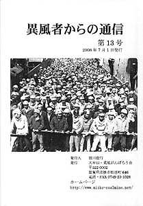

| 炭坑労働者の年表 / 私が少年坑夫だった頃 伊藤武志 / 三池ー名もなく去って行った者たち / 三池炭鉱探訪ー炭鉱社宅編 / 故郷に寄せる熱きメッセージ / 筑豊をさるく・炭鉱犠牲者復権の塔 / 編集後記 |
| 炭坑労働者の年表 / シンガー横井久美子さんとじん肺闘争 積勝昭 / 炭鉱離職者からの手紙 / 三池炭鉱探訪ー四山社宅編 / 故郷に寄せる熱きメッセージ / 筑豊をさるく・日鉄二瀬鉱業所高雄第2坑跡地 / 編集後記 |
| 炭坑労働者の年表 / 中村茂歳さんの炭鉱の記憶（聞き取り）/ 三池炭鉱探訪ー厚生理容所 / 故郷に寄せる熱きメッセージ / 筑豊をさるく・麻生吉隈炭鉱無縁墓地跡 / 編集後記 |
| 三池のこども 内田 博 / 三池CO患者 中野さんの場合（聞き取り）/ 筑豊をさるく・貝島炭鉱ー「謝恩碑」と 「俵口和一郎頌徳碑」 / 編集後記 |
| 坑内 内田 博 / 炭坑労働者の年表 / 三池を闘った平畑金一さんの記録（聞き取り）/ 三池炭鉱探訪ー三井鉱山大谷社宅編 / 故郷に寄せる熱きメッセージ / 筑豊をさるく・「新目尾炭鉱跡」 / 編集後記 |
| 「暗い夜の記憶」 内田 博 / 炭坑労働者の年表 / 全学連と三池闘争（聞き取り）/ 三池炭鉱探訪ー「故久保清君殉難乃碑」 / 故郷に寄せる熱きメッセージ / 筑豊をさるく「直方市の坑夫像」 / 編集後記 |
| 死者からの手紙 / 炭坑労働者の年表 / 三池炭鉱ーよみがえる父親の記憶（聞き取り）/ 三池炭鉱探訪ー「三川鉱記念館跡」 / 故郷に寄せる熱きメッセージ / 筑豊をさるく「方城炭坑罹災者招魂之碑」 / 編集後記 |
| 詩集「まおろし」より / 炭坑労働者の年表 / 忘れ得ぬ記憶〜三菱高島鉱労組書記長の死（聞き取り）/ 三池炭鉱探訪ー「三井医院跡」 / 故郷に寄せる熱きメッセージ / 筑豊をさるく「野上天道鉱業所の墓碑」 / 編集後記 |
| 詩集「まおろし」より / 炭坑労働者の年表 / 森永ヒ素ミルク中毒事件 / 三池炭鉱探訪ー「三井三池鉄道」 / 故郷に寄せる熱きメッセージ / 筑豊をさるく「忠隈炭鉱〜ボタ山という名の墓標」 / 編集後記 |
| 詩集「まおろし」より / 炭坑労働者の年表 / 赤旗が語るもの / 三池炭鉱探訪ー「三井鉱山馬渡社宅跡」 / 故郷に寄せる熱きメッセージ / 筑豊をさるく「三井山野炭鉱跡」 / 編集後記 |
| 東川絹子詩集「灰 ひときれ」から / 三菱方城炭鉱に強制配転されたアイヌ民族 / 受川さんが死んだ / 炭坑労働者の年表 / 故郷に寄せる熱きメッセージ / 三池炭鉱探訪「三池工業高校—勤労学徒慰霊碑」 / 編集後記 |
| 上甲米太郎さんと「三井・三池への二重連行」のつながりは？ / 「森永ヒ素ミルク中毒被害児の母親日記」より / 元香川県青年学校勤労坑夫からの聞き取り / 炭坑労働者の年表 / 故郷に寄せる熱きメッセージ / 三池炭鉱探訪「福岡県捕虜収容所第17分署所跡」 / 筑豊をさるく「北九州炭鉱中津原鉱業所跡」 / 編集後記 |
|  |
| 50年目の手紙 東川絹子 / 「わが子を奪われて」森永ヒ素ミルク中毒事件 / 詩一編「呼び出し」 伊藤武志 / 父ちゃんの死ーある三池労組闘士の場合 / 炭坑労働者の年表 / 故郷に寄せる熱きメッセージ / 三池炭鉱探訪 「向坂家の墓」 / 筑豊をさるく「貝島大之浦炭鉱桐野坑犠牲者の供養塔 / 編集後記 |
| 詩二編「呼び出し」「春」 伊藤武志 / 森永ヒ素ミルク公害との闘い（聞き取り） / 炭坑労働者の年表 / 故郷に寄せる熱きメッセージ / 三池炭鉱探訪「上甲米太郎さん訪ねある記（大牟田編）」 / 筑豊をさるく 「上田鉱業㈱上清炭鉱跡」 / 編集後記 |
| 三川鉱炭塵大爆発の記録—柳田秀吉さんからの聞き取り / 大牟田時代以降における上甲米太郎さんについて / 炭坑労働者の年表 / 故郷に寄せる熱きメッセージ / 三池炭鉱探訪「笹林山跡」 / 筑豊をさるく「三菱方城大非常」 / 編集後記 |
| 「内田麟太郎詩集」より / 前進座事件（聞き取り） / 炭坑労働者の年表 / 故郷に寄せる熱きメッセージ / 三池炭鉱探訪ー三池刑務所の「合葬之碑」 / 編集後記 |
| 三井三池ＣＯ裁判闘争（聞き取り） / 炭坑労働者の年表 / 故郷に寄せる熱きメッセージ / 三池炭鉱探訪ー三川鉱坑口跡 / 筑豊をさるくー上尊鉱業豊州炭鉱跡 / 一冊の本ー写文集「労働者人生 本・人・心」 / 編集後記 |
| 45年目の11月9日を迎えて / 1963年11月9日 / 絶望との対面 / 被災者の叫び / そして、再び闘い / 11月9日 三川鉱大災害犠牲者氏名 / あとがき |
| 内田博全詩集より「仏壇の歌」 / よみがえる土倉鉱山の記憶（聞き取り） / 炭坑労働者の年表 / 故郷に寄せる熱きメッセージ / 三池炭鉱探訪ー旧大久保食堂 / 筑豊をさるくー井之浦炭坑跡 / 編集後記 |
| 内田博全詩集より「惨忍な眼」 / 語てぃん 語てぃん 語いぶさ / 炭坑労働者の年表 / 故郷に寄せる熱きメッセージ / 端島炭鉱の記憶（聞き取り） / 三池炭鉱探訪ーガタガタ橋 / 編集後記 |
| 内田博全詩集より「人間喪失」 / 三池炭鉱職員家族からの聞き取り / 炭坑労働者の年表 / 故郷に寄せる熱きメッセージ / 三池炭鉱探訪ー荒尾市立緑ヶ丘小学校 / 筑豊をさるく—明治鉱業赤池炭鉱殉職者鎮魂碑 / 編集後記 |
| アメリカザリガニ 内田博 / 死者ニ非ズ（聞き取り） / 炭坑労働者の年表 / 故郷に寄せる熱きメッセージ / 三池炭鉱探訪—万田公園 / 筑豊をさるく— 旧三井田川炭鉱住宅 / 編集後記 |
| 三池の春 内田博 / 藤澤孝雄さんからの手紙 / 炭坑労働者の年表 / 故郷に寄せる熱きメッセージ / 三池炭鉱探訪—荒尾市電 / みいけ資料館—ホッパー人形 / 筑豊をさるく— 小倉炭鉱殉職者慰霊搭 / 編集後記 |
| 夕闇 内田博 / 三池闘争・久保清君刺殺事件 / 炭坑労働者の年表 / 故郷に寄せる熱きメッセージ / 三池炭鉱探訪—不滅の情熱の歌人・山口好 / みいけ資料館—ホッパーパイプ / 筑豊をさるく— 黒ダイヤが語る旧色街・栄町 / 編集後記 |
| 筑豊の春 内田博 / ある「三池のこども」の死 / 炭坑労働者の年表 / 故郷に寄せる熱きメッセージ / 三池炭鉱探訪—校歌 / 長崎をさるく— 軍艦島と南越名海難者無縁仏之碑 / 編集後記 |
| 三池のかあちゃん / 炭坑労働者の年表 / 故郷に寄せる熱きメッセージ / 三池炭鉱探訪—近江絹糸労組三池を守る会 / 詩「三池の捨て子」 東川絹子 / 佐賀をさるく— にあんちゃんの里 / 編集後記 |
| 水俣と三池（上） / 炭坑労働者の年表 / 三池炭鉱探訪—解脱塔 / 山口をさるく— 長生炭鉱跡 / みいけ資料館−三池労組の鉢巻 / 編集後記 |
| 水俣と三池（下） / 炭坑労働者の年表 / 三池炭鉱探訪—囚人墓地 / みいけ資料館−三池労組の組合員記章 / 編集後記 |
| 三池の記憶 / 炭坑労働者の年表 / 三池炭鉱探訪—囚人墓地 / みいけ資料館−「三池の主婦の子守唄」人形 / 佐賀をさるく−三菱古賀山炭鉱跡 / 編集後記 |
| 三池闘争こぼれ話 / 炭坑労働者の年表 / 三池炭鉱探訪—有明鉱殉職者之碑 / みいけ資料館−三池主婦会鉢巻 / 詩「ひょんこ ひょんこ」内田麟太郎 / 筑豊をさるく−三井田川六坑のボタ山 / 編集後記 |
| みいけ50年に学ぶネットワーク / 父・上形好人（投稿）/ 炭坑労働者の年表 / 三池炭鉱探訪—玉名炭鉱跡 / みいけ資料館− 三池炭鉱労働組合結成30周年記念盾 / 山口をさるく−宇部興産㈱宇部鉱業所 / 編集後記 |
| BACK TOP NEXT |